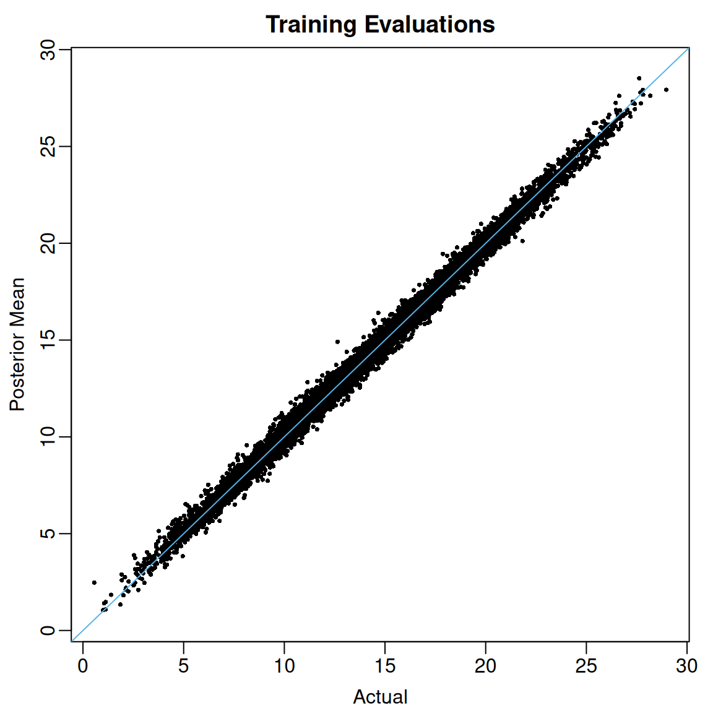
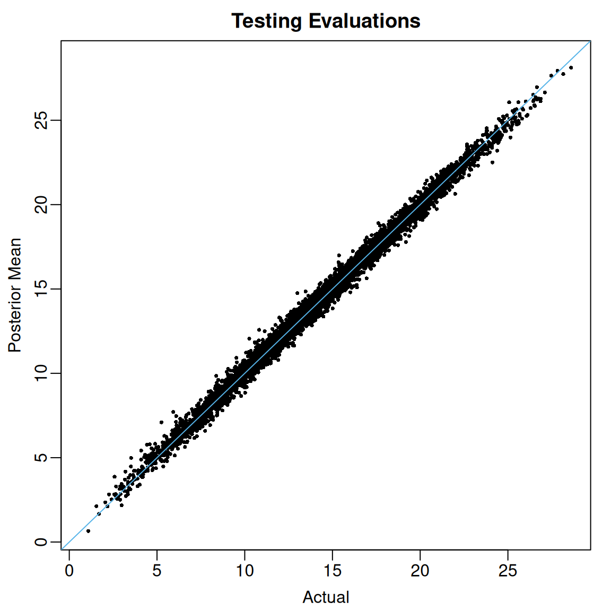

Overview
flexBART is a new implementation of Bayesian Additive Regression Trees (BART; Chipman et al. (2010)) that introduces a new formula interface and implements a lot of data pre-processing in an effort to make it easier than ever to fit BART models. flexBART also supports fitting (generalized) linear varying coefficient models, which posit a linear relationship between the inverse link and some predictors but allow that relationship to change as a function of other predictors, and heteroskedastic BART models, in which both the mean and log-variance are approximated with separate regression tree ensembles.
In this vignette, we demonstrate how to use flexBART to fit a basic BART model in the standard nonparametric regression problem with homoskedastic Gaussian errors.
Background
Suppose we observe pairs of -dimensional predictor vectors1 and scalar outputs
According to the basic BART model, for each where is the unknown regression function and is the unknown residual variance. BART approximates as a piecewise constant step-function, which it represents as a sum of several binary regression trees. Fitting a BART model formally involves (i) specifying a joint prior over the regression trees used to approximate and the residual variance ; and (ii) computing a joint posterior distribution over the trees and Since the posterior distribution is analytically intractable, posterior summaries are computed using Markov chain Monte Carlo (MCMC). See Chipman et al. (2010) for full details.
Basic Usage
We will use a slightly modified version of the Friedman function, which is often used to check and benchmark BART implementations, to demonstrate the basic usage of flexBART.
We begin by defining the Friedman function.
Although the function depends on only 5 predictors, for this demonstration, we will create a total of predictors, each drawn uniformly from the interval We will also add noise.
set.seed(724)
n_train <- 10000
p_cont <- 50
sigma <- 2.5
train_data <- data.frame(Y = rep(NA, times = n_train))
for(j in 1:p_cont) train_data[[paste0("X",j)]] <- runif(n_train, min = 0, max = 1)
mu_train <- friedman_func(train_data[,paste0("X",1:p_cont)])
train_data[,"Y"] <- mu_train + sigma * rnorm(n = n_train, mean = 0, sd = 1)To fit a basic BART model to these data with flexBART, it suffices to specify the formula and train_data arguments.
The formula argument
Models for flexBART are specified symbolically using syntax similar to that used to fit (generalized) linear models with lm() and glm(). To fit the vanilla BART model with flexBART(), the formula should take the form response ~ bart(terms) where response is the numeric response and terms specifies the predictors on which the trees are allowed to split.
The terms specification of . will include all variables except response that are found in train_data as predictors. A terms specification of the form x1 + x2 will include just the variables x1 and x2 while a specification of the form .-x1-x2 will include all variables in train_data except response, x1, and x2.
The formula argument must include the string “bart” on the right-hand side. Expressions like Y ~ X1 + X2 will be not work. Additionally, flexBART does not support the special R formula symbols :, *, 1, ^, and I().
Data Pre-Processing
flexBART internally re-scales all numeric predictors to the interval [-1,1] and represents the distinct values of categorical predictors with non-negative integers. Decision rules based on a numerical predictor take the form . The “cutpoint” in such a decision rule at a given node in a regression tree is drawn uniformly from a set of available values of which is itself determined by the decision rules at the node’s ancestors in the tree. This set can be a discrete set of continuous interval, depending on the nature of .
flexBART() initially determines whether is discrete (i.e., ordinal) or continuous by first sorting the unique values of and computing consecutive differences. If there are fewer than (resp. more than) n_unik_diffs unique consecutive differences, is treated as a discrete (resp., continuous) predictor. For discrete, numerical the initial set of available cutpoints is set of unique values of . flexBART() maps a padded range of values to the interval by adding (resp. subtracting) pad standard deviations to the maximal (resp. minimal) value of The maximal and minimal values and the standard deviation of is determined using training data (i.e., train_data) and the testing data (i.e., test_data), if provided. The default values of n_unik_diffs and pad are, respectively, 5 and 0.2.
Categorical Predictors
In flexBART ensembles, decision rules based on categorical predictors take the form where is a random subset of the discrete values that can assume. To support such decision rules, flexBART implements a new decision rule prior for categorical predictors in which, conditionally on the splitting variable the “cutset” is formed by looping over all available values of and randomly assigning each to with probability 1/2.
Fitting the Model
Like Stan2, flexBART simulates 4 Markov chains for 2,000 iterations each and discards the first 1,000 iterations of each chain as “burn-in”. You can adjust these values using the optional n.chains, nd, and burn arguments.
fit <-
flexBART::flexBART(
formula = Y~bart(.),
train_data = train_data)Computing Posterior Summaries
flexBART() always returns the posterior mean of the function evaluations for each training observation (i.e., for each ) These posterior means are contained in the yhat.train.mean attribute of flexBART()’s output. In the code below, we plot these posterior means against the actual regression function evaluations.
View code
oi_colors <- palette.colors(palette = "Okabe-Ito")
limits <- range(c(mu_train, fit$yhat.train.mean))
par(mar = c(3,3,2,1), mgp = c(1.8, 0.5, 0))
plot(mu_train, fit$yhat.train.mean,
pch = 16, cex = 0.5,
xlim = limits, ylim = limits,
xlab = "Actual", ylab = "Posterior Mean",
main = "Training Evaluations")
abline(a = 0, b = 1, col = oi_colors[3])
When the argument save_samples is set to TRUE (the default setting), flexBART() will also return all posterior draws of the individual evaluations These draws are contained in the yhat.train attribute, which is a matrix whose rows index post-“burn-in” MCMC draws and whose columns index training observations. Using these samples, we can compute, for instance, 95% posterior credible intervals for each .
post_quantiles <-
apply(fit$yhat.train, MARGIN = 2,
FUN = quantile,
probs = c(0.025, 0.975)) |>
t() |>
as.data.frame()
mean( mu_train >= post_quantiles[,"2.5%"] & mu_train <= post_quantiles[,"97.5%"])
#> [1] 0.972For these data, the coverage of the pointwise 95% credible intervals is 97.2%.
Variable Selection
Intuitively, we might expect the -th predictor to be predictive of the outcome if is used as a splitting variable at least once in the tree ensemble. We can operationalize this intuition by computing marginal posterior inclusion probabilities of the form and then selecting only those whose marginal inclusion probabilities exceed 50%.
The varcount attribute of flexBART()’s output contains an three-dimensional array tracking the number of times each predictor is used as a splitting variable in every MCMC iteration. The first dimension indexes post-“burn-in” MCMC samples across the four chains and the second dimension indexes the total number of predictor. The third dimension indexes the total number of ensembles, which in this simple example is just one.
dim(fit$varcounts)
#> [1] 4000 50 1The code below shows how to compute the posterior inclusions probabilities.
In this example, we see that the only predictors with posterior inclusion probabilities exceeding 50% are Although thresholding these marginal posterior inclusion probabilities is somewhat ad hoc, we have found it to work rather well when used in conjunction with Linero (2018) “DART” prior over the splitting variable used in each decision rule. Briefly, if we let denote the prior probability that a decision rule will be based on the -th predictor the DART prior places a sparsity-inducing Dirichlet prior on the vector flexBART() implements the DART prior by default but it can also be run with constant prior splitting probabilities (i.e. each ) by setting the optional argument sparse = FALSE.
Posterior Predictive Simulation
The attributes yhat.train and yhat.train.mean of flexBART()’s output contain the posterior draws and posterior mean of the function evaluations. To draw from and to summarize the posterior predictive distribution at each observed one must add in additional random noise. Specifically, given a posterior sample we can form a posterior predictive draw by computing where is drawn independently from a distribution.
In the code below, we loop over all training observations and generate draws from the corresponding posterior predictive distribution. Then, we form 95% posterior predictive intervals and calculate the fraction of observed outcomes that fall within these intervals.
nd <- nrow(fit$yhat.train)
ystar_train <- matrix(nrow = nd, ncol = n_train)
for(i in 1:n_train){
ystar_train[,i] <- fit$yhat.train[,i] + rnorm(n = nd , mean = 0, sd = fit$sigma)
}
ystar_quantiles <-
apply(ystar_train, MARGIN = 2,
FUN = quantile, probs = c(0.025, 0.975)) |>
t()
mean( train_data$Y >= ystar_quantiles[,"2.5%"] & train_data$Y <= ystar_quantiles[,"97.5%"])
#> [1] 0.96At least for this example, we see that 96% of the observed ’s fall within the predictive intervals.
Making Predictions at New Inputs
So far, we have focused only on the posterior distribution of the regression function evaluated at the observed predictor vectors To compute the posterior distribution of “out-of-sample” or “testing” evaluations (i.e., the value of at a new predictor vector ), we can use flexBART’s predict() method. To demonstrate, we first create some test set observations.
flexBART implements its own prediction method (predict.flexBART()), which can be accessed through the generic predict(). This method takes two inputs:
-
object, which should be the full object returned byflexBART() -
newdata, which is adata.framecontaining test set observations.
It is critical that newdata contains measurements of all the predictors used for training the BART model (i.e. colnames(newdata) should be a subset of colnames(train_data)). Additionally, it is critical that flexBART() was run with the setting save_trees = TRUE (the default).
test_preds <- predict(object = fit, newdata = test_data)The object test_preds contains MCMC samples of evaluated at each observation in test_data. So, we can compute posterior means and credible intervals by computing column-wise means and quantiles.
test_summary <-
data.frame(MEAN = apply(test_preds, MARGIN = 2, FUN = mean),
L95 = apply(test_preds, MARGIN = 2, FUN = quantile, probs = 0.025),
U95 = apply(test_preds, MARGIN = 2, FUN = quantile, probs = 0.975))We see that the posterior means of out-of-sample evaluations of line up pretty well with the actual values.
View code

At least for these data, the coverage of the 95% posterior credible intervals for out-of-sample regression function evaluations is excellent.
mean( (mu_test >= test_summary$L95 & mu_test <= test_summary$U95))
#> [1] 0.974Finally, just as an optional sanity check, we can compare the posterior samples of the ’s computed during the MCMC simulation to the ones obtained using predict().
In this case, the differences are within tolerable numerical precision.